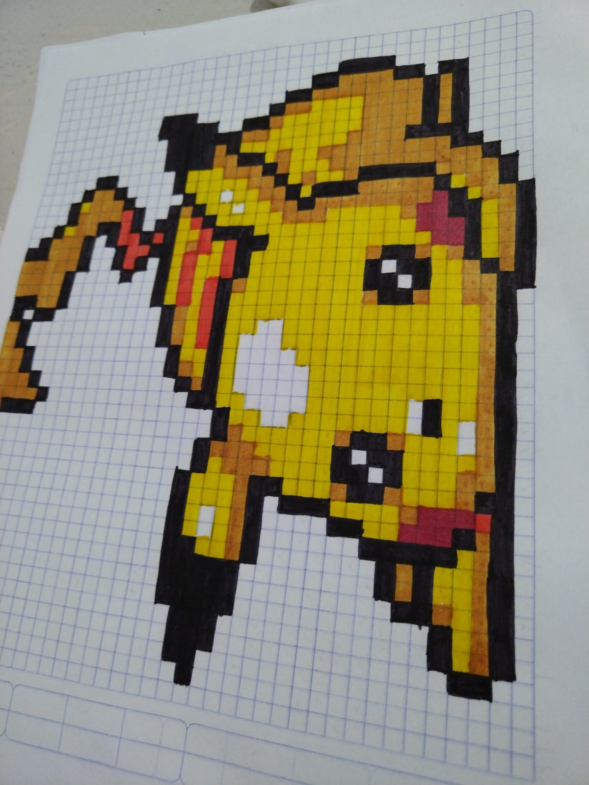

Mis hobbies
Aficiones
- Leer
- Dibujar 
- Maquillarme
- Salir con amigos o con mi familia
- Jugar basquet
- Programar
- Me gusta saber cosas sobre el universo

¿Que me gusta hacer
Me gusta leer, porque para mi es una forma de salir por un momento de tu realidad y asi poder vivir nuevas aventuras, pero tambien hay libros que te hacen cuestionarte y eso es bastante divertido porque encuentras muchas respuestas a una sola pregunta.
Me gusta dibujar porque es una forma en la que me relajo, ademas de que me gusta jugar con las luces y las sombras que se le pueden hacer a los dibujos, una de las formas en las que más me gusta dibujar es a pluma .
Me gusta maquillarme porque para mi es una forma de "arte" ya que puedes experimentar hacer varias cosas y tener varios estilos
Me gusta salir porque para mi es una forma en la que me puedo desestresar
Me gusta jugar basquet porque cuando iba en la secundaria a una amiga le gustaba y entonces me hacia jugar y desde ahi me gusta, no soy muy buena jugando pero me gusta
Me gusta la programación, este es un gusto que apenas estoy comenzando a tener, para ser sincera cuando era pequeña nunca me hibiera imaginado que yo estaria aprendiendo a programar, pero estoy feliz de hacerlo, porque aunque a veces se me complica me gusta mucho los resultados.
¿Que hago?
Las cosas que hago varean mucho, ya que cuando voy a la escuela me enfoco a hacer mis tareas, ir a mis clases. Pero cuando estoy de vacaciones ayudo a mi mamá y la acompaño a donde va. Aunque en estas vacaciones eso cambio un poco, sigo acompañando a mi mamá pero tambien voy a play Telecom a mi curso y me agrada.